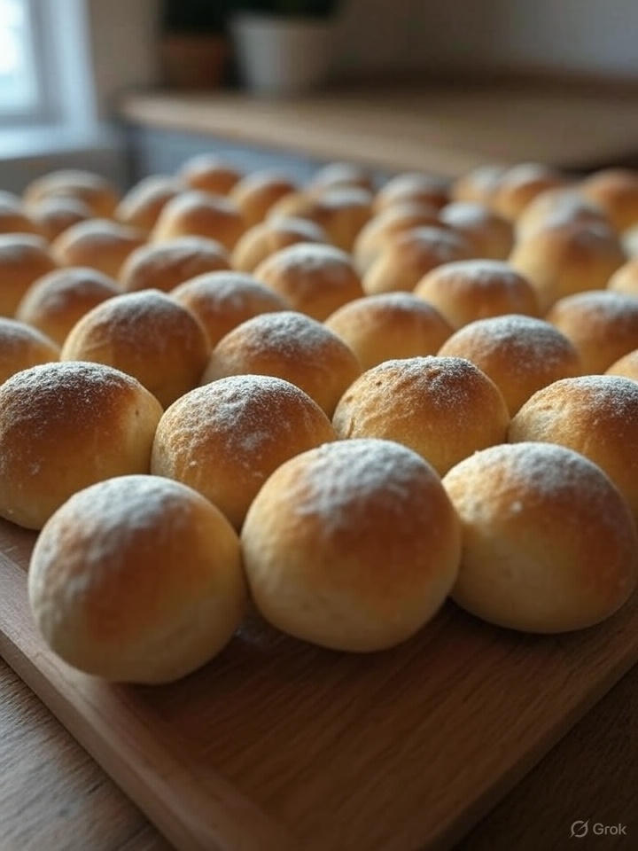

Pão Caseiro Artesanal
🧾 Ingredientes
- 2 kg de farinha de trigo (pode ser especial para pão)
- 40 g de sal (cerca de 2 colheres de sopa rasas)
- 40 g de açúcar (para ativar o fermento)
- 40 g de fermento biológico seco (4 pacotes de 10g)
- 1,2 litros de água morna (na temperatura do corpo)
- 120 ml de azeite de oliva extra virgem
- (Opcional) 1 ovo para pincelar antes de assar
👨🍳 Modo de Preparo
- Ativação do fermento: Em um bowl, dissolva o fermento e o açúcar em 400ml da água morna. Espere 10 minutos até formar uma espuma cremosa.
- Mistura inicial: Em uma bacia grande, misture a farinha peneirada com o sal. Faça um vulcão no centro e adicione o fermento ativado, o restante da água e o azeite.
- Sovagem: Sove por 10-15 minutos até a massa ficar lisa e desgrudar das mãos. Se necessário, adicione farinha aos poucos, mas não exagere para não ficar pesado.
- Primeira fermentação: Cubra com um pano úmido e deixe em local aquecido (25-30°C) por 1h30 ou até dobrar de volume.
- Modelagem: Despeje a massa em superfície enfarinhada, divida em 4-6 partes e modele como preferir (redondo, francês, em formas).
- Prova final: Arrume em assadeiras, cubra e deixe crescer por mais 45 minutos. Pré-aqueça o forno a 200°C.
- Assamento: Pincele com água ou ovo batido (opcional) e asse por 30-40 minutos até dourar. Para testar, bata na base - deve soar oco.
- Resfriamento: Espere 20 minutos antes de cortar para não murchar. A crosta ficará mais crocante se assar com vapor.
🌟 Dicas do Padeiro Noturno
- Temperatura ideal: A água deve estar morna como leite de mamadeira (37°C). Muito quente mata o fermento.
- Fermentação controlada: Em dias frios, deixe a massa no forno desligado com uma xícara de água fervente.
- Variantes gourmet: Adicione 100g de queijo parmesão ralado ou ervas finas na massa para um toque especial.
- Armazenamento: Congele os pães já fatiados e toste direto do freezer - ficam como frescos.
- Truque profissional: Para crosta brilhante, pincele com água gelada ao sair do forno.